Curious Being
A Method to Decipher Ancient Machine Marks from Hand Tools
Tina · 25 min · watch on YouTube · summarised 2026-08-22
Quarry marks are the subject, and the reason she gives for caring about them is the right one 01:18–01:31: they are fingerprints. Whatever cut the stone left its record in the stone, and unlike a date or an attribution that record is still there to be examined.
Two families of mark recur across unconnected sites. Layered slanted marks — bands of parallel striations — at Longyou in China, at old quarries in Germany, France, Switzerland and Italy, at Mount Nokogiri in Japan, at the Osiris Shaft on the Giza plateau. Long continuous marks at Baalbek, Yangshan and the Longmen Grottoes. Petra has both.
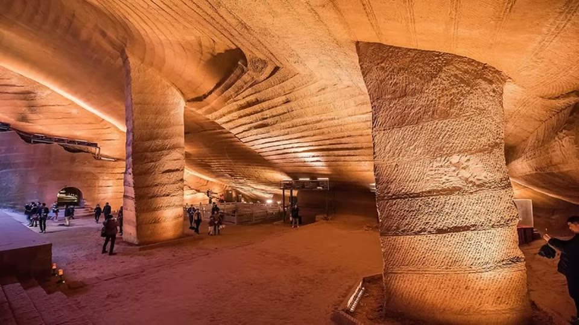
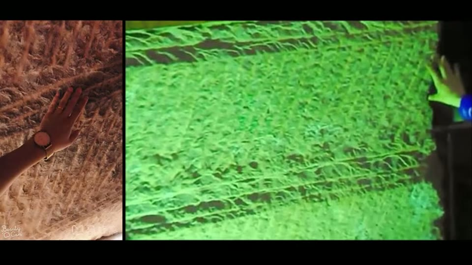
The reference case: bands about 60 cm high, filled with parallel slanted striations, and a continuous horizontal line separating every course from the next.
The video's value is that it is a test, not a claim — and that she runs it on sites that fail it as carefully as on the ones that pass.
What makes Longyou the reference case
Over 40 caves cut into sandstone hills, average floor area over 1,000 m², some 30 m high 02:00–02:22. Every surface from floor to ceiling carries the same mark: bands about 60 cm wide, with parallel slanted striations between them 02:26–02:41. She notes in passing that the carved reliefs are a park addition and not original.
Two features do the work, and she asks the viewer to hold on to both 04:16–04:27:
1. The horizontal lines between courses are gratuitous. A long continuous horizontal line is hard to cut and does nothing for the job of removing stone. "No mason would do this kind of redundant work." 2. The striation angle never changes — not between courses, not within a course, and not on the approach to an inner corner.
She compares Longyou with a 20th-century salt mine in Ukraine 03:14–03:31 and is precise about where the comparison breaks: the layering matches, but the salt mine has no separating horizontal lines.
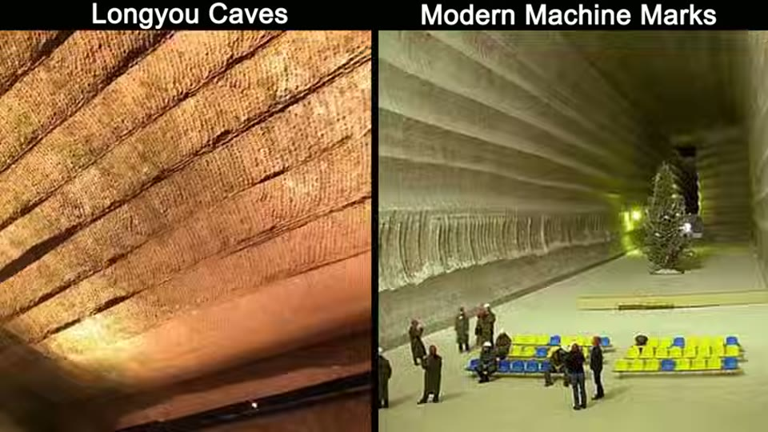
The layering matches a modern machine-cut mine. What the mine does not have is the horizontal line between courses, which is the feature she says no mason would cut.
The contrast case: what hand work actually looks like
This is the half of the video that makes it worth trusting. The European and Japanese quarries look like Longyou, and she spends four minutes showing why they are not 04:28–06:37:
- angles flip and vary between courses and even within one course
- at an inner corner, the marks originate from the corner line and flare outwards — because a worker has to turn and face the corner to swing at all
- pickaxe marks curve, because a swinging arm describes an arc; chisel marks are straight
- the result is a herringbone pattern, which she takes as the signature of hand work
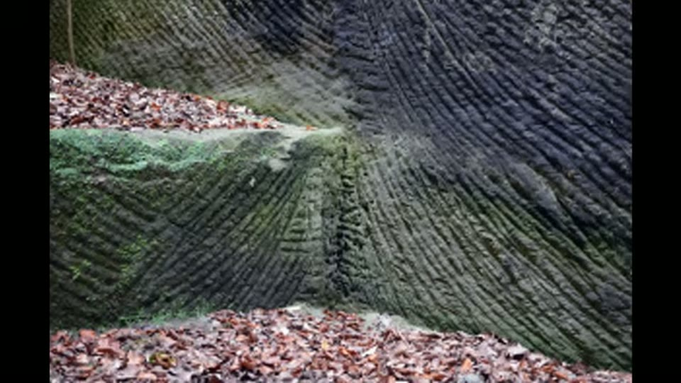
What hand work looks like: the angle changes between courses and within them, and at an inner corner the marks start from the corner line and flare outwards, because a worker has to turn and face the corner to swing at all.
Petra, and the rejection of the easy explanation
Petra she considers the clearest case 08:35–11:47. The Urn Tomb is a chamber of over 3,400 m³ — nearly two Olympic pools of removed stone — and its walls and ceiling carry ultra-fine parallel markings, which recur in other caves and on the round columns of the Treasury.
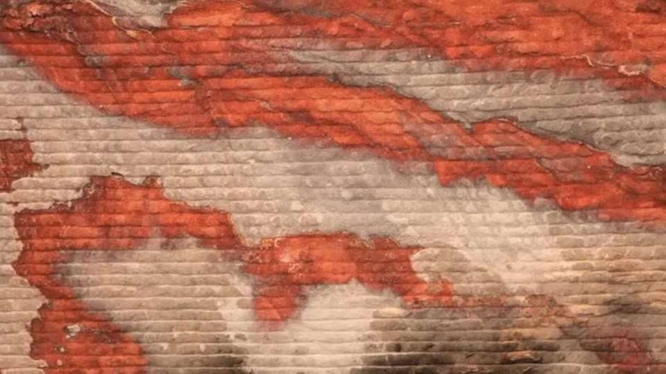
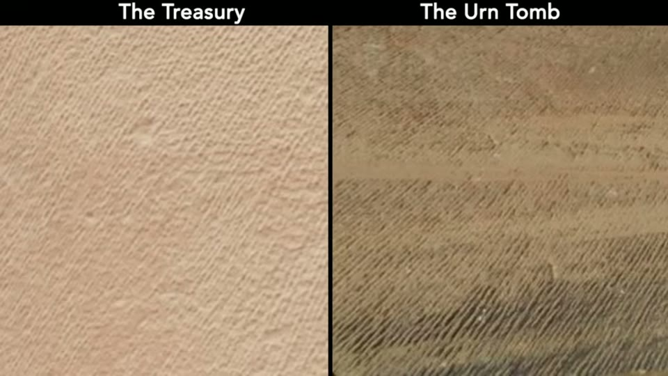
Ultra-fine parallel marks covering entire walls and ceilings, holding their angle across the whole surface - and continuing around the curve of a column.
The obvious objection is the tooth chisel, and she takes it on rather than ignoring it 09:41–10:38. Her evidence is comparative: Greek and Roman tooth-chisel marks on marble change angle frequently across any large surface, and a chisel is struck, so variation in force and angle leaves patchy unevenness. She points out that the Treasury itself was reworked with point and tooth chisels beside the original marks, so both are there to compare.
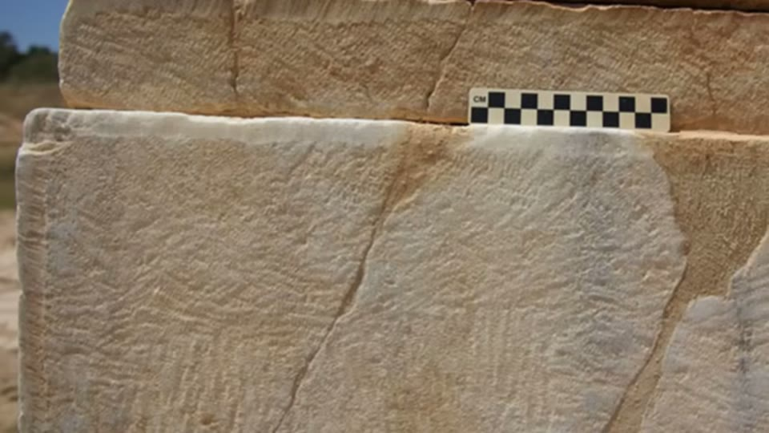
The objection she takes on: this is what a tooth chisel actually leaves on a large surface - short strokes running in visibly different directions, not one ruling.
Two further points are checkable facts rather than impressions: Petra's sandstone is close to 7 on the Mohs scale, near granite, and she shows a modern stonemason working sandstone with hammer and chisel to make the practical case.
Her conclusion for Petra is layered rather than flat: the caves may be the work of an earlier civilisation with machinery, later rediscovered and reworked by the people who left the herringbone marks.
The STEAM guideline
The centre of the video 12:20–13:41. Five factors, and a stated threshold:
| factor | the question | |
|---|---|---|
| S | Size | do the mark sizes exceed a hand tool's working range? |
| T | sTone type | is it rock hard enough to need advanced metal tools? |
| E | Era | do the markings predate the metal tools they would require? |
| A | Angles | do the striation angles fit how hand tools are actually used? |
| M | Morphology | hand-tool or machine excavation patterns? |
Two or more factors clearly defying the norm, and she is willing to call it a possible ancient machine mark.
Case study 1 — the site that fails the test
She runs it first on a Swiss sandstone quarry whose layered marks closely resemble Longyou's 13:42–17:29, and the answer is hand tools:
- Size 40–60 cm — within hand-tool range
- Stone Bernese sandstone, soft and prone to weathering
- Era late 17th to 19th century — modern tools, chainsaws later
- Angles flip and change randomly, between and within courses
- Morphology course heights vary, striation thickness and depth change as if different tools were used, and some areas are not layered at all
Then the part that lifts this above a checklist. She asks the awkward question herself — how did hand tools stay that consistent? — and answers it 16:17–17:29 with water weakening: sandstone loses strength when wet, which is why climbers are advised off sandstone for 24–48 hours after rain, and Bernese sandstone is especially vulnerable. She checked the local climate: that region rains over 40% of the year. Softened stone plus modern steel explains the uniformity without any machine.
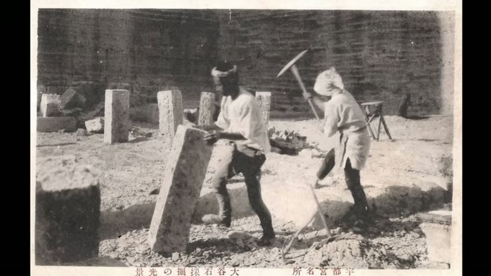
The sites she rules out are documented modern quarries, and the work that made them was photographed while it was happening.
On the same reasoning she rules out the other 17th–20th century Swiss quarries and the Japanese tuff quarries including Oya 17:45–18:33, noting that their stepped work-in-progress faces show exactly how blocks were levered out.
Case study 2 — the sites that pass
Petra 18:34–19:28 — marks metres long, hard quartz sandstone, pre-Roman, angles that do not change even around a cylindrical column, morphology she describes as looking 3D-printed. Four factors.
Baalbek's foundation stones 19:29–21:16 — marks taller than an adult; limestone, so the stone type does not count against hand work; pre-Roman; large curves and concentric circles, which no mason would trouble to produce when roughing out a block; and a morphology argument that is the sharpest thing in the video: the depth of the mark does not change from one end to the other, meaning steady, consistent applied force, and the spacing is about three times wider than pickaxe spacing at the quarry — a powerful single-tooth tool taking bigger bites.
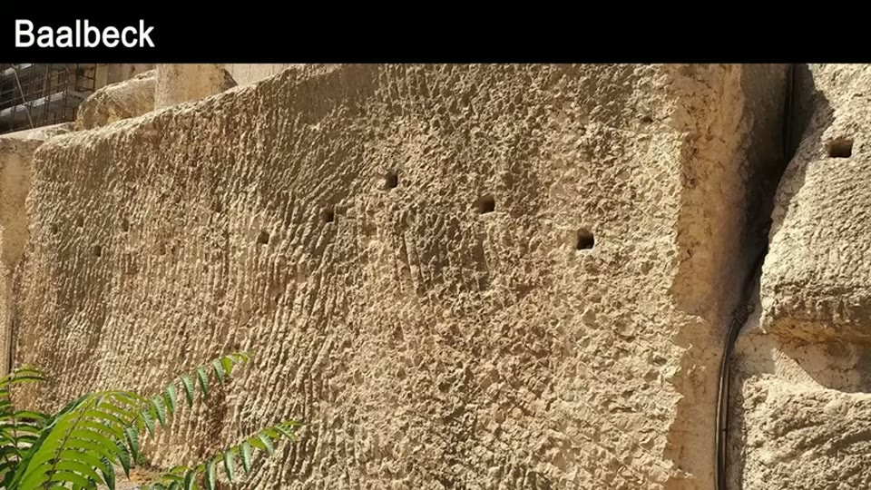
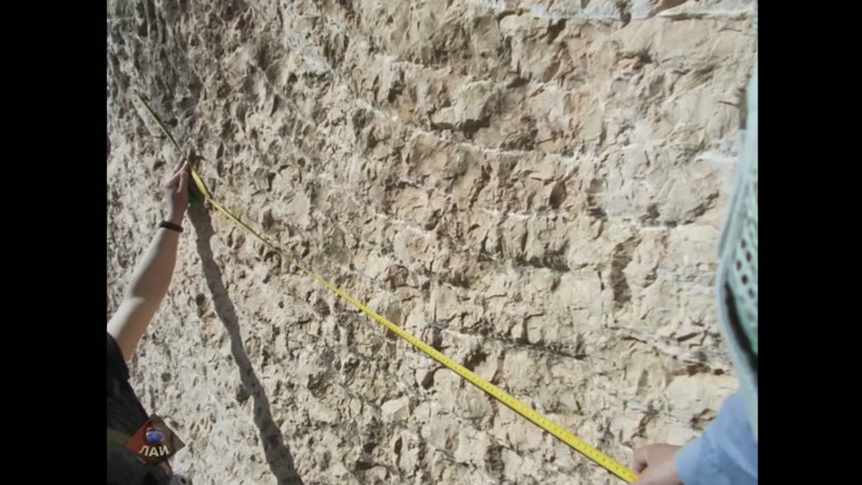
Marks taller than a person, in large curves, at a spacing about three times wider than pickaxe work - and holding the same depth from one end to the other, which means a steady force rather than a swung arm.
The Chinese coastal tuff quarries 21:17–22:50 — horizontal marks running on indefinitely, at an angle no hand tool naturally cuts, spaced about 9 cm as at Baalbek, and with large gentle round corners where the horizontal marks curve smoothly around — which she compares to the cut face of a rotary drum cutter moving sideways.
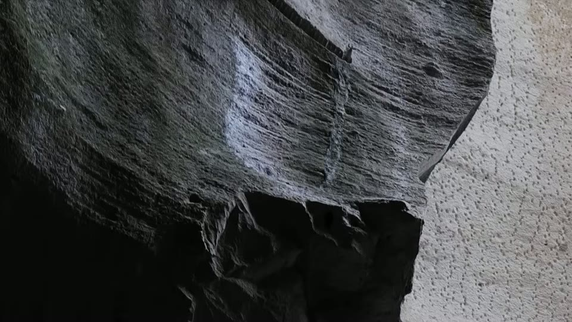
Horizontal marks running on indefinitely at an angle no hand tool naturally cuts, and carrying smoothly around a large rounded corner the way a rotary drum cutter moving sideways would leave them.
The side note that matters
22:51–23:31 Herringbone marks alone do not settle anything. At Petra the chisel marks sit on top of the machine marks, which tells you the chiselling came second. Sites get reworked, and later marks obscure earlier ones — so a site has to be read in layers rather than judged by its most visible surface.
What you can check yourself
- Whether the striation angle holds into an inner corner is the single most testable claim here, at Longyou and at every comparison site. It is a photograph.
- The gratuitous horizontal lines — either they are there, serving no excavation purpose, or they are not.
- Petra's Mohs hardness, near 7 with high quartz content, is standard petrology.
- Water weakening of sandstone is well documented, and the climbing advice she cites is real. So is the rainfall figure for that Swiss region.
- Striation spacing — roughly 9 cm at Baalbek and the Chinese quarries against pickaxe spacing at the same sites — is a measurement anyone can take off a scaled photograph.
- Chisel marks over machine marks at Petra is a stratigraphic claim about one surface, and visible in her own frames.
- The dated Song-dynasty artefact at Longyou is an excavation record.
What the video does not settle
- Water weakening is applied only to the sites she rules out. It explains Swiss uniformity beautifully — and Longyou is also sandstone, in a wet region, which she says herself when she notes the two sites "share two commonalities in the tool mark sizes and stone type". If soaked sandstone plus good steel produces uniform marks in Switzerland, the same argument is available at Longyou and is not answered here. This is the largest hole in an otherwise careful video.
- Era is circular for the cases that matter. Era counts as evidence of machining only if the site's date is known independently — but at Longyou the date is "assumed", and a fallen Song dynasty artefact gives a latest-possible date for the artefact, not an excavation date. For Petra and Baalbek the argument runs "it is old, therefore they lacked tools, therefore machines", which cannot then be turned round to argue the site is older than thought.
- Nothing is measured. The whole method turns on consistency, and consistency is the one thing that could be quantified — striation spacing, depth variance, angular deviation. Every judgement here is made by eye.
- The two-factor threshold is arbitrary and the factors are unweighted, so Size and Era count the same even though one is a measurement and the other is an inference.
- "Impossible for hand tools" is asserted, not tested. No replication is attempted, and the modern-stonemason clip shows difficulty rather than impossibility.
- Alternatives to a machine are not canvassed for the passing cases — abrasive sawing, drag sledges, a rotating tool on a column, wedge-and-channel work.
See also
Ancient Chinese Quarry: Proof of Lost Advanced Technology? and Mystery Solved on the Purpose of Longyou Caves! — the two sites this method is built around, argued separately.
What we have not checked
- Several place names are as spoken and are not confirmed: the "Baster Caves" in Turkey; the Italian and French quarries; and the Swiss quarry of the first case study, which the captions render both as Chräzeren and as Crocodil, with its neighbour appearing as Stäffelegg, Stäffelberg and Staffelbach. These are almost certainly one or two real quarries behind mangled captions, and any citation needs the spelling checked first.
- The 3,400 m³ Urn Tomb volume, the 40%-of-the-year rainfall figure and the "150 times more efficient" jackhammer comparison are hers and have not been traced.